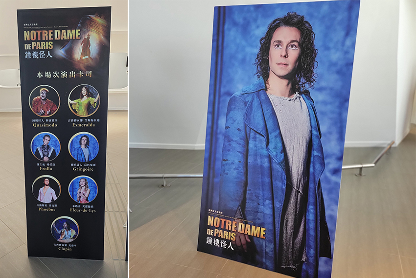
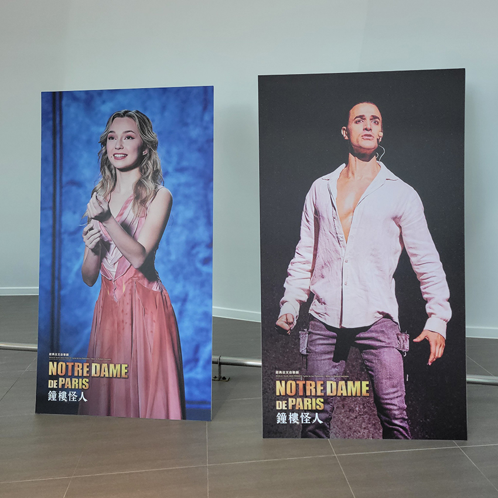
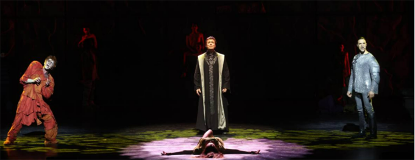
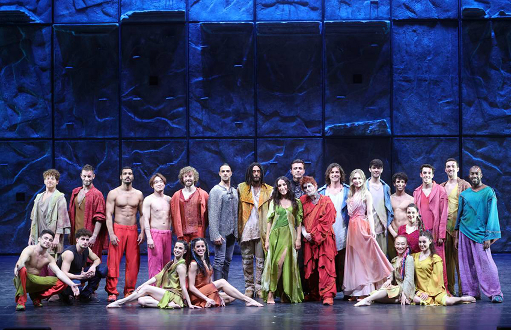
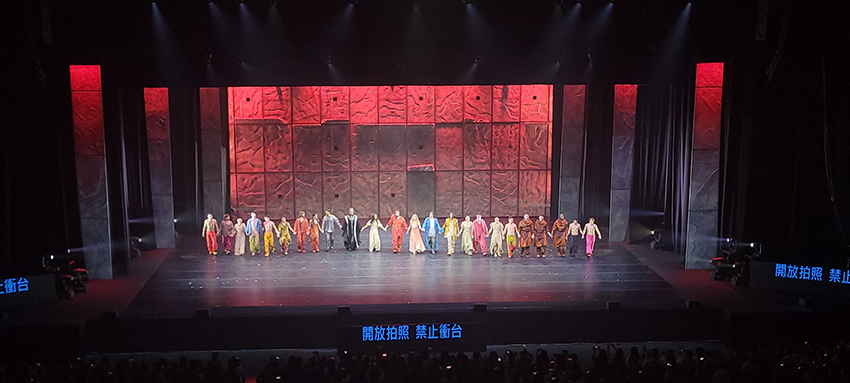

|
回想第一次接觸法文音樂劇，是在高中時的法文課上撥放了幾首法文音樂劇經典之一 《鐘樓怪人》的經典曲，讓我從此愛上了法文音樂劇。 提到音樂劇也許大家第一個想到的是和歌劇有什麼差別呢？其實，音樂劇在題材上相較歌劇更加平易近人，音樂結構更自由多變，風格也更加活潑自然，聲音的表現上美聲融入通俗的唱法，不像歌劇嚴肅詠嘆且絕對美聲，另外，兩者最大的差別是，音樂劇的表演者也是舞者，但歌劇的表演者則不是。 這次來台演出的作品 – 《鐘樓怪人》(Notre-Dame de Paris)是法國和加拿大聯合製作的一部音樂劇，改編自法國作家維克多·雨果的小說《鐘樓怪人》，於1998年9月16日在巴黎首演。劇中的音樂為義大利作曲家Riccardo Cocciante (理察·柯強特)所作，歌詞為法裔加拿大詞作家Luc Plamondon (呂克·普拉蒙東)所作。 鐘樓怪人故事的場景設定在1482年的巴黎聖母院，內容環繞一名吉卜賽少女Esmeralda (愛絲梅拉達)和由副主教Claude Frollo (克諾德·福羅諾)養大的聖母院駝背敲鐘人Quasimodo (加西莫多)。其中包含許多經典曲目，《Le temps des cathédrales》、《Les cloches》、《La fête des fous》、《Belle》，等等...
| ||||||||
這是我第四次現場觀賞法文音樂劇，鐘樓怪人則是第二次，這次演出於 2022年4月 8 日至 4 月 17 日在台北流行音樂中心，因為疫情，原定2021年演出的表演一直延到了2022年，能順利演出真的很不容易。能現場觀賞演員們的演出，依舊跟第一次觀賞的心情一樣，非常激動跟興奮。
表演的一開始是我最喜歡的曲目之一，《Le temps des cathedrals》 (大教堂時代)，演場的角色是吟遊詩人Pierre Gringoire (葛林果)，在整部音樂劇中，不僅是故事中的人物，從某種意義上講也作為局外的講述人。他也是整部作品中我最喜歡的角色。這首歌就像是引言人 ”這個故事發生於美麗的巴黎，時值一四八二年，敍述愛與慾望的故事，我們這些無名藝術家，運用意象和詩韻，試着賦予它生命，獻給各位及未來的世紀”。
|  | |
| 2022/04/09場次演出卡司 | 飾演Pierre Gringoire演員John Eyzen |
經典曲目之一《La monture》(坐騎)是由Fleur-de-Lys (小百合)與Phoebus (菲比斯)男女合唱的曲目。面對菲比斯感情的背叛，小百合告訴他，如果他處死艾絲美拉達，他將仍擁有她全身心的愛。整首曲風充滿掙扎、忌妒與對艾絲美拉達的恨意，能感受到小百合壓抑的情緒。
|  |
| 左飾演Fleur-de-Lys演員Emma Lepine，右飾演Phoebus演員Gian Marco Schiaretti |
本劇最具代表性的曲目是《Belle》(美麗佳人)，由三位表演者，Quasimodo (加西莫多) 、Frollo (福羅諾)與Phoebus (菲比斯)所演唱的曲目，內容主要從三位傾慕Esmeralda (愛絲梅拉達)的男人，三種不同的愛。加西莫多是對她不斷加深的溫柔親切，福羅諾是對她不斷加深的神魂顛倒，而被小百合妒忌的眼神注視著的菲比斯則是希望在邁入婚姻殿堂前享受片刻激情。
|  |
| 翻自udn聯合數位文創 |
|  |
| 翻自udn聯合數位文創，彩排後全體演員大合照 |
經典法文音樂劇《鐘樓怪人》演員們唱出文學巨擘雨果筆下的愛恨情仇，透過歌聲帶著我們跟著劇情一起痛惡疾呼、感動落淚，讓我們以最美的方式親歷巴黎聖母院，也回到那個1482年的那個時代，希望有機會能夠再現場親臨感受，也希望讓不曾接觸過發文音樂劇的人有機會驗體，如果看完這篇文章，對這部作品有興趣的，也可以再Youtube上搜尋《鐘樓怪人音樂劇》也可以欣賞到這個作品唷。
|  |
| 2022/04/09 場次演員謝幕 |